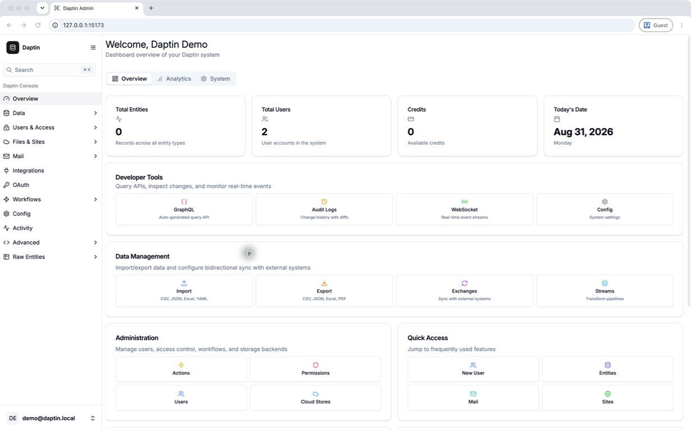
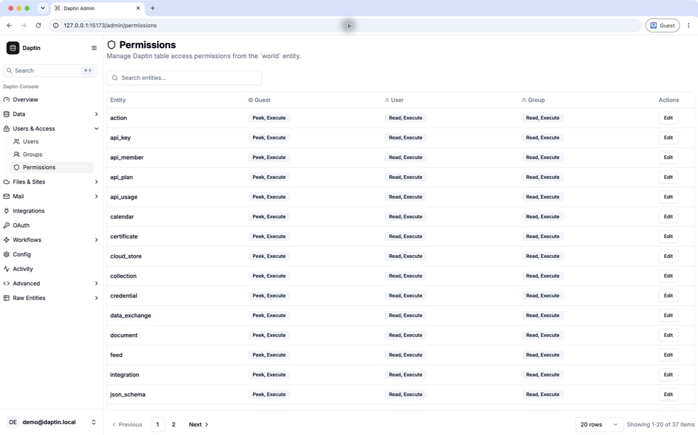
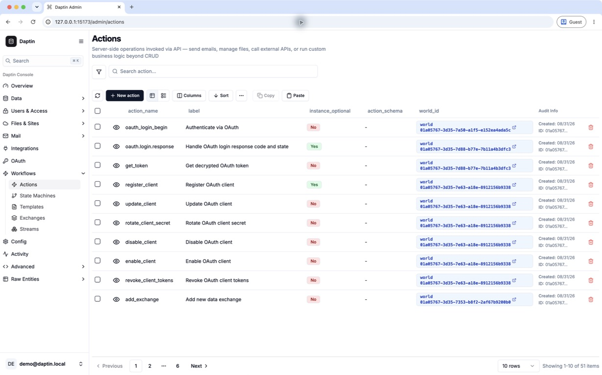

Twelve years of backend experience · one application server
A self-hosted application server for relational data.
Daptin turns your data model into a self-hosted backend with access control, validation, relationships, files, automation, and operational safeguards already connected.
schema_product.yaml
Tables:
- TableName: product
IsAuditEnabled: true
IsStateTrackingEnabled: true
DefaultGroups: [catalog-editors]
Metering:
Enabled: true
MeterType: request
Columns: [...]
Relations: [...]
POST /api/product 201
GET /api/product 200
Stable public IDsChecked relationshipsTransactions + request limits
From model to runtime
Define the data and rules that drive the runtime.
The same definition drives storage, validation, relationships, APIs, permissions, discovery, and administration.
Explore the complete feature map →
A complete table definition
TableName: product
TableDescription: Sellable catalog item
DefaultPermission: 208
Permission: 208
IsHidden: false
IsAuditEnabled: true
TranslationsEnabled: true
IsStateTrackingEnabled: true
DefaultGroups: [catalog-editors]
AccessGroups: [catalog-admins]
DefaultOrder: +title
Icon: fa-box
CompositeKeys:
- [tenant_code, sku]
Validations:
- ColumnName: title
Tags: required,min=3,max=200
Conformations:
- ColumnName: title
Tags: trim
Metering:
Enabled: true
CostExpr: 1
MeterType: request
Columns:
- Name: title
ColumnName: title
ColumnDescription: Display title
DataType: varchar(200)
ColumnType: label
IsNullable: false
IsIndexed: true
IsUnique: true
ExcludeFromApi: false
Permission: 208
- Name: status
DataType: varchar(20)
ColumnType: enum
DefaultValue: 'draft'
Options:
- {Value: draft, Label: Draft}
- {Value: published, Label: Published}
- Name: photo
DataType: text
ColumnType: image.png|jpg|jpeg|gif|tiff
IsNullable: true
IsForeignKey: true
ForeignKeyData:
DataSource: cloud_store
Namespace: local-store
KeyName: images
Relations:
- Subject: product
Relation: belongs_to
Object: category
DefaultRelations:
category_id:
- <category-reference-id>
01 / structureColumns, relations, constraints, defaults, and ordering
02 / exposeJSON:API, GraphQL, OpenAPI, and dashboard3
03 / governPermissions, groups, validation, audit, state, and translations
04 / operateMetering, actions, schedules, events, storage, and servers
This example covers the author-facing TableInfo and ColumnInfo controls used by the runtime. Daptin derives internal table identity, ownership, join/top-level status, explicit-field merge tracking, standard columns, owner/group relations, and generated audit, translation, or state tables. See every table field and all built-in entities →
Why Daptin uses established protocols
Protocols on the wire, not a required Daptin client.
Use established API, auth, mail, and file-transfer clients. Tags name Daptin interfaces and services.
Check the the latest release feature list ↗OAuth 2.0, OpenID Connect, JWT, and TOTP.
Reach your data over mail, file, storage, and feed protocols.
Call external APIs without shipping secrets to the browser.
Compatibility limits: the CalDAV/CardDAV routes
provide basic WebDAV file storage, not the full calendar and contact
specifications. Daptin uses JSON:API resource documents, but does not
implement the optional include query.
The shipped admin interface
See and edit the live backend in dashboard3.
dashboard3 running on Daptin the latest release.
See the product in detail →


Backend engineering
Start with the engineering most teams discover they need later.
Daptin applies the same identity, integrity, traffic, database, authentication, and operational controls across the runtime.
Fast internal joins. Stable public identities.
Daptin keeps compact integer keys inside the database and exposes indexed UUIDv7 references. Related records are checked for existence and permission before a relationship is stored.
See the data foundations →Traffic and database pressure stay bounded.
URL rate limits run before handlers, simultaneous requests are capped, and database connections are pooled, bounded, reused, and retired on a configured lifetime.
See the protective controls →Database changes commit together or roll back together.
Core record changes share a transaction. Password changes invalidate earlier sessions, while durable mail processing uses leases, timeouts, and retry with backoff.
Explore the engineering →Self-hosted deployment
Run one executable or a container on your infrastructure.
WindowsWindowsx86-64 executable ↓LinuxLinuxx86-64 binary ↓Linux ARM64Raspberry Pi64-bit ARM binary ↓macOSIntel macOSx86-64 binary ↓ContainerDockerLatest image →Two servicesDocker ComposeDaptin + PostgreSQL →Bring your ownKubernetesRelease limitations →ProductionPersistence and health checksDeployment notes →
See Deploy for artifact limits.
Explore the project
Evaluate Daptin from four angles.
Architecture, compatibility, ownership, and fit.